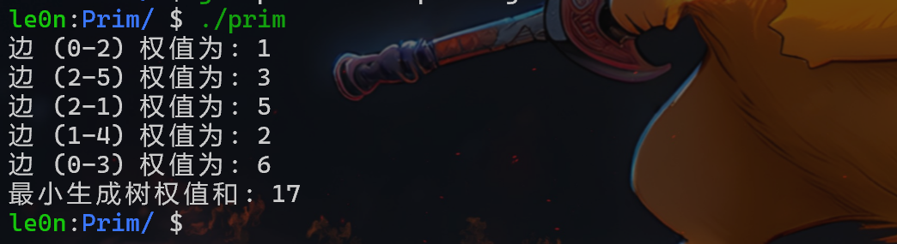

数据结构三要素：逻辑结构、存储结构、数据运算（增删改查）
所以呢以下代码实现也将从这三方面展开
二叉搜索树 存储结构：
1 2 3 4 typedef struct BSTNode { int data; struct BSTNode *lchild, *rchild; }BSTNode;
二叉搜索树————查找 拿要找的数和根结点对比，如果要找的数大于根结点，就去右子树找，如果小于根结点，就去左子树找
如果要找的数等于根结点，就直接返回根结点
如果要找的数不存在，就返回空指针
1 2 3 4 5 6 7 8 9 10 11 12 13 14 15 16 17 18 19 20 21 22 BSTNode *RecSearch (BSTNode *root, int x) { if (root == NULL ) return NULL ; else if (x < root->data) return RecSearch (root->lchild, x); else if (x > root->data) return RecSearch (root->rchild, x); else return root; } BSTNode *IterSearch (BSTNode *root, int x) { while (root != NULL ){ if (x < root->data) root = root->lchild; else if (x > root->data) root = root->rchild; else break ; } return root; }
二叉搜索树————插入 查找到要插入的位置(通过root指针遍历)，即查找失败的位置
在该位置插入新的结点
1 2 3 4 5 6 7 8 9 10 11 void Insert (BSTNode *&root, int x) if (root == NULL ){ root = (BSTNode *)malloc (sizeof (BSTNode)); root->data = x; root->lchild = root->rchild = NULL ; } else if (x < root->data) Insert (root->lchild, x); else if (x > root->data) Insert (root->rchild, x); }
二叉搜索树————构建 1 2 3 4 5 6 7 8 BSTNode *CreateBST (int a[], int n) { BSTNode *root = NULL ; for (int i = 0 ;i < n; i++){ Insert (root, a[i]); } return root; }
二叉搜索树————删除 查找到要删除的结点,删除该结点
注：root是以引用类型传递的，即可以修改；
在递归过程中，每次的root是某个结点的lchild或rchild，通过root = root->child保证了链表的完整性
1 2 3 4 5 6 7 8 9 10 11 12 13 14 15 16 17 18 19 20 21 22 23 24 25 26 27 28 29 30 31 32 33 34 35 36 37 38 39 40 41 42 43 44 45 46 47 48 49 BSTNode *FinMin (BSTNode *p) { while (p->lchild != NULL ){ p = p->lchild; } return p; } BSTNode *FinMax (BSTNode *p) { while (p->rchild != NULL ){ p = p->rchild; } return p; } void Delete (BSTNode *&root, int x) if (root == NULL ) return ; if (x < root->data) Delete (root->lchild, x); else if (x > root->data) Delete (root->rchild, x); else { if (root->lchild == NULL && root->rchild == NULL ){ free (root); root = NULL ; } else if (root->lchild != NULL && root->rchild == NULL ){ BSTNode *temp = root; root = root->lchild; free (temp); } else if (root->lchild == NULL && root->rchild != NULL ){ BSTNode *temp = root; root = root->rchild; free (temp); } else { BSTNode *next = FinMin (root->rchild); root->data = next->data; Delete (root->rchild, next->data); } } }
判断二叉搜索树 每遍历到一个数就和前一个数进行比较
如果 > 前一个数就继续遍历
否则则说明不是二叉搜索树
1 2 3 4 5 6 7 8 9 10 11 12 13 14 15 BSTNode *pre = NULL ; bool flag = true ; void JudgeBST (BSTNode *root) if (root!=NULL &&flag==true ){ JudgeBST (root->lchild); if (pre==NULL ) pre = root; else if (root->data > pre->data) pre = root; else flag = false ; JudgeBST (root->rchild); } }
测试 AI写的测试代码：
1 2 3 4 5 6 7 8 9 10 11 12 13 14 15 16 17 18 19 20 21 22 23 24 25 26 27 28 29 30 31 32 33 34 35 36 37 38 39 40 41 42 43 44 45 46 47 48 49 50 51 52 53 54 55 56 57 58 59 60 61 62 63 64 65 66 67 68 69 70 void InOrder (BSTNode *root) if (root){ InOrder (root->lchild); std::cout << root->data << " " ; InOrder (root->rchild); } } int main () int arr[] = {50 , 30 , 70 , 20 , 40 , 60 , 80 }; int n = sizeof (arr) / sizeof (arr[0 ]); BSTNode *root = CreateBST (arr, n); printf ("===== 初始构建的二叉搜索树（中序遍历）=====\n" ); InOrder (root); printf ("\n\n" ); int target1 = 40 ; int target2 = 90 ; BSTNode *res1 = RecSearch (root, target1); BSTNode *res2 = RecSearch (root, target2); printf ("===== 递归查找测试 =====\n" ); printf ("查找 %d：%s\n" , target1, res1 ? "找到" : "未找到" ); printf ("查找 %d：%s\n\n" , target2, res2 ? "找到" : "未找到" ); BSTNode *res3 = IterSearch (root, target1); BSTNode *res4 = IterSearch (root, target2); printf ("===== 迭代查找测试 =====\n" ); printf ("查找 %d：%s\n" , target1, res3 ? "找到" : "未找到" ); printf ("查找 %d：%s\n\n" , target2, res4 ? "找到" : "未找到" ); int insertVal = 55 ; Insert (root, insertVal); printf ("===== 插入 %d 后（中序遍历）=====\n" , insertVal); InOrder (root); printf ("\n\n" ); int del1 = 20 ; Delete (root, del1); printf ("===== 删除叶子节点 %d 后 =====\n" , del1); InOrder (root); printf ("\n" ); int del2 = 70 ; Delete (root, del2); printf ("===== 删除单孩子节点 %d 后 =====\n" , del2); InOrder (root); printf ("\n" ); int del3 = 50 ; Delete (root, del3); printf ("===== 删除根节点 %d 后 =====\n" , del3); InOrder (root); printf ("\n" ); return 0 ; }
运行结果：
Dijkstra（迪杰斯特拉） 原版 按照王道书步骤：
1 2 3 4 5 6 7 8 9 10 11 12 13 14 15 16 17 18 19 20 21 22 23 24 25 26 27 28 29 30 31 32 33 34 35 36 37 38 39 40 41 42 43 44 45 46 47 #include <iostream> #define MAXV 100 #define INF 0x3fffffff void Dijkstra (int graph[MAXV][MAXV],int n,int v) int dist[MAXV]; bool flag[MAXV]; for (int i=0 ;i<n;i++){ dist[i] = graph[v][i]; flag[i] = false ; } flag[v] = true ; dist[v] = 0 ; for (int i=1 ;i<n;i++){ int mindist = INF; int k = -1 ; for (int j=0 ;j<n;j++){ if (flag[j]==false && dist[j]<mindist){ mindist = dist[j]; k = j; } } if (k==-1 ) break ; flag[k] = true ; for (int j=0 ;j<n;j++){ if (flag[j]==false && graph[k][j] != INF && dist[j] > dist[k]+graph[k][j]){ dist[j] = dist[k]+graph[k][j]; } } } for (int i=0 ;i<n;i++){ std::cout << "dist[" << i << "] = " << dist[i] << std::endl; } }
Prim 最小生成树
1 2 3 4 5 6 7 8 9 10 11 12 13 14 15 16 17 18 19 20 21 22 23 24 25 26 27 28 29 30 31 32 33 34 35 36 37 38 39 40 41 42 43 44 45 46 47 48 49 50 51 52 53 54 55 56 57 58 59 60 61 62 #define MAXV 100 #define INF 0x3fffffff #include <iostream> int Prim (int graph[MAXV][MAXV], int n, int v) int lowcost[MAXV]; int sum = 0 ; int closeu[MAXV]; for (int i=0 ;i<n;i++){ if (i==v) lowcost[i] = 0 ; else lowcost[i] = graph[v][i]; closeu[i] = v; } for (int i=1 ;i<n;i++){ int mindist = INF; int k = -1 ; for (int j=0 ;j<n;j++){ if (lowcost[j] != 0 && lowcost[j] < mindist){ mindist = lowcost[j]; k = j; } } if (k == -1 ) return -1 ; lowcost[k] = 0 ; std::cout << "边 (" << closeu[k] << "-" << k << ") 权值为: " << mindist << std::endl; sum += mindist; for (int j=0 ;j<n;j++){ if (lowcost[j] != 0 && graph[k][j] < lowcost[j]){ lowcost[j] = graph[k][j]; closeu[j] = k; } } } return sum; } int main () int graph[MAXV][MAXV] = { {INF, 14 , 1 , 6 , INF, INF}, {14 , INF, 5 , INF, 2 , INF}, { 1 , 5 , INF, 9 , 10 , 3 }, { 6 , INF, 9 , INF, INF, 12 }, {INF, 2 , 10 , INF, INF, 8 }, {INF, INF, 3 , 12 , 8 , INF} }; int total = Prim (graph, 6 , 0 ); std::cout << "最小生成树权值和: " << total << std::endl; return 0 ; }
运行结果：

BiBubbleSort 写此代码实现对王道书上的一道课后题，双向冒泡排序
针对数组27, 23, 1, 8, 9, 66, 54, 43，进行双向冒泡排序，每趟从左到右或从右到左的扫描均算作一轮，手算：
第1轮（左→右）：数组变为[23,1,8,9,27,54,43,66]。
第2轮（右→左）：数组变为[1,23,8,9,27,43,54,66]。
第3轮（左→右）：数组变为[1,8,9,23,27,43,54,66]（此时已有序）。
第4轮（右→左）：无交换发生，排序完成。
共需4轮单向扫描。
1 2 3 4 5 6 7 8 9 10 11 12 13 14 15 16 17 18 19 20 21 22 23 24 25 26 27 28 29 30 31 32 33 34 35 36 37 38 39 40 41 42 43 44 45 46 47 48 49 50 51 52 53 54 55 56 57 58 59 60 61 62 63 64 65 66 67 68 69 70 71 72 73 74 #include <iostream> #include <utility> void Output (int arr[],int n) for (int i=0 ;i<n;i++){ std::cout << arr[i] << " " ; } std::cout << std::endl; } void BiBubbleSort (int arr[],int n) int left = 0 ,right = n-1 ; int count = 0 ; while (left < right){ bool flag = false ; for (int i=left;i<right;i++){ if (arr[i] > arr[i+1 ]){ std::swap (arr[i],arr[i+1 ]); flag = true ; } } right--; count++; if (flag==false ) { std::cout << "无交换，排序完成，退出循环" << std::endl; break ; } Output (arr,n); flag = false ; for (int i=right;i>left;i--){ if (arr[i] < arr[i-1 ]){ std::swap (arr[i],arr[i-1 ]); flag = true ; } } left++; count++; if (flag==false ) { std::cout << "无交换，排序完成，退出循环" << std::endl; break ; } Output (arr,n); } std::cout << "总共进行了 " << count << " 轮比较" << std::endl; } int main () int arr[] = {27 , 23 , 1 , 8 , 9 , 66 , 54 , 43 }; int n = sizeof (arr)/sizeof (arr[0 ]); std::cout << "排序前：" ; Output (arr,n); std::cout << "排序过程：\n" ; BiBubbleSort (arr,n); std::cout << "排序后：" ; Output (arr,n); return 0 ; }
最终看一下程序运行结果：
1 2 3 4 5 6 7 8 9 le0n:BiBUbbleSort/ $ ./BiBubbleSort 排序前：27 23 1 8 9 66 54 43 排序过程： 23 1 8 9 27 54 43 66 1 23 8 9 27 43 54 66 1 8 9 23 27 43 54 66 无交换，排序完成，退出循环 总共进行了 4 轮比较 排序后：1 8 9 23 27 43 54 66
QuickSort 基础 核心思想：在待排序表L[1….n]中任取一个元素作为数轴，通过一趟排序将原表分为两个独立的子表L[1…k-1]和L[k…n]，使得左子表中所有元素的关键字小于数轴，右子表中所有元素关键字大于或等于数轴。此时，数轴元素被放在了其最终位置L[k]上，随后重复此操作
快速排序的递归树结点中的格式
每个节点表示一次 Partition 调用：
区间 [l,r]
枢轴最终位置 i（及其值 pivot）
目标数组 : 56,23,82,45,76,69,20,45,93,16,27
1 2 3 4 5 6 7 8 9 10 11 12 13 14 15 16 17 18 19 20 21 22 23 24 25 26 graph TD classDef pivot fill:#1e1e1e,stroke:#aaa,color:#fff; classDef leaf fill:#000,stroke:#666,color:#fff; A[[0,10<br/>6]]:::pivot A --> B[[0,5<br/>3]]:::pivot A --> C[[7,10<br/>7]]:::pivot B --> D[[0,2<br/>1]]:::pivot B --> E[[4,5<br/>4]]:::pivot D --> F[[0,0]]:::leaf D --> G[[2,2]]:::leaf E --> H[[4,3]]:::leaf E --> I[[5,5]]:::leaf C --> J[[7,6]]:::leaf C --> K[[8,10<br/>10]]:::pivot K --> L[[8,9<br/>9]]:::pivot K --> M[[11,10]]:::leaf L --> N[[8,8]]:::leaf L --> O[[10,9]]:::leaf
由于这段代码程序是递归的不方便搞成排一趟序输出一下，构建了对应的递归调用树如上：
1 2 3 4 5 6 7 8 9 10 11 12 13 14 15 16 17 18 19 20 21 22 23 24 25 26 27 28 29 30 31 32 33 34 35 36 37 38 39 40 41 42 43 44 45 46 47 48 49 50 51 52 53 54 55 56 #include <iostream> int Partition (int arr[],int left,int right) int pivot = arr[left]; while (left < right){ while (left < right && arr[right] >= pivot) right--; arr[left] = arr[right]; while (left < right && arr[left] <= pivot) left++; arr[right] = arr[left]; } arr[left] = pivot; return left; } void Output (int arr[],int n) for (int i=0 ;i<n;i++){ std::cout << arr[i] << " " ; } std::cout << std::endl; } void QuickSort (int arr[],int left,int right) if (left < right){ int i = Partition (arr,left,right); QuickSort (arr,left,i-1 ); QuickSort (arr,i+1 ,right); } } int main () int arr[] = {56 ,23 ,82 ,45 ,76 ,69 ,20 ,45 ,93 ,16 ,27 }; int n = sizeof (arr)/sizeof (arr[0 ]); std::cout << "排序前：" ; Output (arr,n); QuickSort (arr,0 ,n-1 ); std::cout << "排序后：" ; Output (arr,n); return 0 ; }
运行结果：
1 2 3 4 le0n:QuickSort/ $ g++ quicksort.cc -o quicksort -g le0n:QuickSort/ $ ./quicksort 排序前：56 23 82 45 76 69 20 45 93 16 27 排序后：16 20 23 27 45 45 56 69 76 82 93
拓展 如果按照上面代码中第一次取枢轴是数组的第一个元素，会造成最坏时间复杂度O(n²)，如：这个递归二叉树所有结点只有左或右子树或者按照王道书上的话：当数组接近有序时，每次划分极不均衡，递归树退化为链表。平均时间复杂度：O(n log n)，最坏时间复杂度：O(n²)，空间复杂度：O(log n)（递归栈）
优化：
方案一：取中间元素作为枢轴并与第一个元素进行交互
将int pivot = arr[left];前面加上int mid = arr[(left+right)/2]; swap(arr[left],arr[mid]);
方案二：随机取一个元素作为枢轴
将int pivot = arr[left];加上int RandIdx = rand()%(right-left+1)+left; swap(arr[left],arr[RandIdx]);
插入排序 直接插入排序 这个就很简单了思想就是正序遍历数组，将一个数组有序序列（如长度为1的数组必是有序序列）后面的无序序列中的元素插入到有序序列。
代码实现：
1 2 3 4 5 6 7 8 9 10 11 12 13 14 15 16 17 18 19 20 21 22 23 24 25 26 27 28 29 30 31 32 33 34 35 36 37 38 39 40 #include <iostream> void InsertSort (int arr[],int n) for (int i=1 ;i<n;i++){ if (arr[i]<arr[i-1 ]){ int temp = arr[i]; int j = i-1 ; do { arr[j+1 ] = arr[j]; j--; }while (j>=0 && arr[j]>temp); arr[j+1 ] = temp; } } } void Output (int arr[],int n) for (int i=0 ;i<n;i++){ std::cout << arr[i] << " " ; } std::cout << std::endl; } int main () int arr[] = {27 ,60 ,20 ,36 ,55 ,7 ,71 ,18 ,90 ,45 }; int n = sizeof (arr)/sizeof (arr[0 ]); std::cout << "排序前：" ; Output (arr,n); InsertSort (arr,n); std::cout << "排序后：" ; Output (arr,n); return 0 ; }
折半插入排序 1 2 3 4 5 6 7 8 9 10 11 12 13 14 15 16 17 18 19 20 21 22 23 24 25 26 27 28 29 30 31 32 33 34 35 36 37 38 39 40 41 42 43 44 45 #include <iostream> void BinaryInsertSort (int arr[],int n) for (int i=1 ;i<n;i++){ int temp = arr[i]; int left = 0 ,right = i-1 ; while (left <= right){ int mid = (left + right) / 2 ; if (temp < arr[mid]) right = mid-1 ; else left = mid+1 ; } for (int j=i-1 ;j>=left;j--){ arr[j+1 ] = arr[j]; } arr[left] = temp; } } void Output (int arr[],int n) for (int i=0 ;i<n;i++){ std::cout << arr[i] << " " ; } std::cout << std::endl; } int main () int arr[] = {27 ,60 ,20 ,36 ,55 ,7 ,71 ,18 ,90 ,45 }; int n = sizeof (arr)/sizeof (arr[0 ]); std::cout << "排序前：" ; Output (arr,n); BinaryInsertSort (arr,n); std::cout << "排序后：" ; Output (arr,n); return 0 ; }
希尔排序 最坏时间复杂度：O(n²)
第一轮分组待处理情况如下：
第二轮希尔排序分组待处理情况如下：
1 2 3 4 5 6 7 8 9 10 11 flowchart LR subgraph G1["第一组 (索引 0,2,4,6,8,10)"] direction LR A7["7"] --- A20["20"] --- A44["44"] --- A28["28"] --- A67["67"] --- A36a["36"] end subgraph G2["第二组 (索引 1,3,5,7,9)"] direction LR B27["27"] --- B60["60"] --- B16["16"] --- B36b["36"] --- B55["55"] end
代码实现：
1 2 3 4 5 6 7 8 9 10 11 12 13 14 15 16 17 18 19 20 21 22 23 24 25 26 27 28 29 30 31 32 33 34 35 36 37 38 39 40 41 42 43 44 45 46 #include <iostream> void Output (int arr[],int n) for (int i=0 ;i<n;i++){ std::cout << arr[i] << " " ; } std::cout << std::endl; } void ShellSort (int arr[], int n) for (int d=n/2 ;d>=1 ;d/=2 ){ int CompareCount = 0 ; for (int i=d;i<n;i++){ CompareCount++; if (arr[i] < arr[i - d]) { int temp = arr[i]; int j = i - d; while (j >= 0 && arr[j] > temp) { CompareCount++; arr[j + d] = arr[j]; j -= d; } arr[j + d] = temp; } } std::cout << "增量为 " << d << " 的排序结果：" ; Output (arr,n); std::cout << "本趟比较次数：" << CompareCount + 1 << std::endl; } } int main () int arr[] = {36 , 27 , 20 , 60 , 55 , 7 , 28 , 36 , 67 , 44 , 16 }; int n = sizeof (arr)/sizeof (arr[0 ]); std::cout << "排序前：" ; Output (arr,n); ShellSort (arr,n); std::cout << "排序后：" ; Output (arr,n); }
运行结果：
1 2 3 4 5 6 le0n:ShellSort/ $ ./shellsort 排序前：36 27 20 60 55 7 28 36 67 44 16 增量为 5 的排序结果：7 27 20 60 44 16 28 36 67 55 36 增量为 2 的排序结果：7 16 20 27 28 36 36 55 44 60 67 增量为 1 的排序结果：7 16 20 27 28 36 36 44 55 60 67 排序后：7 16 20 27 28 36 36 44 55 60 67
堆排序 选择排序核心思想：每一趟再后面 n-i+1 个待排序元素中选取关键字最小的元素，作为有序子序列的第i个元素。直到第 n-1 趟排序完成，待排序元素剩下一个则无需再选。同样堆排序也可以从这个角度理解
这里以大根堆为例，大根堆：根结点 > 左、右结点
核心：
把一个无序数组简历成符合大根堆条件的完全二叉树，进行堆排序最终得到有序数组
建堆：从最后一个非叶结点开始（即n/2向下取整）依次向下调整
调整：先从左、右结点中选出大的，再拿这个大的与根结点进行对比，若该结点 > 根节点，则交换。并对换下来的根节点再次重复前面的操作
利用arr[0]进行交换 1 2 3 4 5 6 7 8 9 10 11 12 13 14 15 16 17 18 19 20 21 22 23 24 25 26 27 28 29 30 31 32 33 34 35 36 37 38 39 40 41 42 43 44 45 46 47 48 49 50 51 52 53 54 55 56 57 58 59 60 61 62 #include <iostream> void HeapAdjust (int arr[], int k, int n) arr[0 ] = arr[k]; for (int i=2 *k;i<=n;i*=2 ){ if (i+1 <=n && arr[i]<arr[i+1 ]) i++; if (arr[i] < arr[0 ]) break ; else { arr[k] = arr[i]; k = i; } } arr[k] = arr[0 ]; } void BuildMaxHeap (int arr[], int n) for (int i=n/2 ;i>0 ;i--){ HeapAdjust (arr, i, n); } } void HeapSort (int arr[],int n) BuildMaxHeap (arr, n); for (int i=n;i>1 ;i--){ std::swap (arr[i], arr[1 ]); HeapAdjust (arr, 1 , i-1 ); } } void Output (int arr[],int n) for (int i=1 ;i<=n;i++){ std::cout << arr[i] << " " ; } std::cout << std::endl; } int main () int arr[] = {0 , 27 , 20 , 60 , 55 , 7 , 28 , 36 , 67 , 44 , 16 }; int n = sizeof (arr)/sizeof (arr[0 ]) - 1 ; std::cout << "排序前：" ; Output (arr,n); HeapSort (arr,n); std::cout << "排序后：" ; Output (arr,n); return 0 ; }
采用swap()函数进行交换 在HeapAdjust中还可以通过swap()函数直接交换父结点和较大的子结点来实现
1 2 3 4 5 6 7 8 9 10 11 12 13 14 15 16 17 18 19 20 21 #include <iostream> #include <utility> void HeapAdjust (int arr[], int k, int n) int i = k,j = 2 *i; while (j<=n){ if (j+1 <=n && arr[j]<arr[j+1 ]) j++; if (arr[j] < arr[i]) break ; else { std::swap (arr[i], arr[j]); i = j; j = 2 *i; } } }
堆插入删除操作 在学习王道书的时候，他提到了堆的插入操作：插入到数组（堆）末端，然后自下而上的与父结点比较来调整，逻辑上就是下面这样这里用了std::vector，其实按照C的特性也可以再HeapInsert()中新开一个满足要求的数组然后copy一下并添加元素：
1 2 3 4 5 6 7 8 9 10 11 12 13 14 15 16 17 18 19 #include <vector> void HeapInsert (std::vector<int >& arr, int k, int n) if (arr.size () < n + 2 ){ arr.resize (n + 2 ); } arr[n+1 ] = k; int i = n + 1 ; while (i>1 && arr[i] > arr[i/2 ]){ std::swap (arr[i],arr[i/2 ]); i /= 2 ; } }
这就体现了前面C代码的缺陷：数组不能动态扩容，这就需要std::vector来搞，干脆推倒重来全部用stl库函数,下面是加入了插入操作和删除任意一个数组元素操作的代码：
1 2 3 4 5 6 7 8 9 10 11 12 13 14 15 16 17 18 19 20 21 22 23 24 25 26 27 28 29 30 31 32 33 34 35 36 37 38 39 40 41 42 43 44 45 46 47 48 49 50 51 52 53 54 55 56 57 58 59 60 61 62 63 64 65 66 67 68 69 70 71 72 73 74 75 76 77 78 79 80 81 82 83 84 85 86 87 88 89 90 91 92 93 94 95 96 97 98 99 100 101 102 103 104 105 106 107 108 109 110 111 112 113 114 115 116 117 118 119 120 121 122 123 124 125 126 127 128 129 130 131 132 133 134 135 136 137 138 139 140 141 142 143 144 145 146 147 148 #include <iostream> #include <vector> #include <utility> void SiftDown (std::vector<int >& arr, int k, int bottom) int root = k; while (true ) { int child = 2 * root + 1 ; if (child > bottom) break ; if (child + 1 <= bottom && arr[child] < arr[child + 1 ]) { ++child; } if (arr[root] >= arr[child]) break ; std::swap (arr[root], arr[child]); root = child; } } void SiftUp (std::vector<int >& arr, int i) while (i > 0 ) { int parent = (i - 1 ) / 2 ; if (arr[i] <= arr[parent]) break ; std::swap (arr[i], arr[parent]); i = parent; } } void BuildMaxHeap (std::vector<int >& arr) int len = arr.size (); for (int i = (len / 2 ) - 1 ; i >= 0 ; i--) { SiftDown (arr, i, len - 1 ); } } void HeapSort (std::vector<int >& arr) BuildMaxHeap (arr); for (int i = arr.size () - 1 ; i > 0 ; i--) { std::swap (arr[0 ], arr[i]); SiftDown (arr, 0 , i - 1 ); } } void HeapInsert (std::vector<int >& heap, int value) heap.push_back (value); SiftUp (heap, heap.size () - 1 ); } void HeapErase (std::vector<int >& heap, int index) int n = heap.size (); if (n == 0 || index < 0 || index >= n) return ; std::swap (heap[index], heap[n - 1 ]); heap.pop_back (); if (index == n - 1 ) return ; int parent = (index - 1 ) / 2 ; if (index > 0 && heap[index] > heap[parent]) { SiftUp (heap, index); } else { SiftDown (heap, index, heap.size () - 1 ); } } void Print (const std::vector<int >& arr) for (int v : arr) std::cout << v << " " ; std::cout << std::endl; } int main () std::vector<int > data = {27 , 20 , 60 , 55 , 7 , 28 , 36 , 67 , 44 , 16 }; std::cout << "原始数组: " ; Print (data); HeapSort (data); std::cout << "排序后: " ; Print (data); std::vector<int > heap = {50 , 30 , 40 , 10 , 20 , 15 }; std::cout << "\n初始堆: " ; Print (heap); HeapInsert (heap, 45 ); std::cout << "插入45后: " ; Print (heap); HeapInsert (heap, 60 ); std::cout << "插入60后: " ; Print (heap); std::cout << "\n删除索引2的元素(" << heap[2 ] << "):\n" ; HeapErase (heap, 2 ); std::cout << "删除后: " ; Print (heap); std::cout << "删除堆顶(" << heap[0 ] << "):\n" ; HeapErase (heap, 0 ); std::cout << "删除后: " ; Print (heap); std::cout << "删除最后一个元素(" << heap.back () << "):\n" ; HeapErase (heap, heap.size () - 1 ); std::cout << "删除后: " ; Print (heap); return 0 ; }
最终运行结果显然满足大根堆的要求：
1 2 3 4 5 6 7 8 9 10 11 12 13 14 le0n:HeapSort/ $ ./heapsort3 原始数组: 27 20 60 55 7 28 36 67 44 16 排序后: 7 16 20 27 28 36 44 55 60 67 初始堆: 50 30 40 10 20 15 插入45后: 50 30 45 10 20 15 40 插入60后: 60 50 45 30 20 15 40 10 删除索引2的元素(45): 删除后: 60 50 40 30 20 15 10 删除堆顶(60): 删除后: 50 30 40 10 20 15 删除最后一个元素(15): 删除后: 50 30 40 10 20
归并排序 核心思想：归并——即将两个或多个有序序列合并为一个更长的有序序列。
先看一下递归树，结合递归树理解代码，回溯的箭头没标出
目标数组：36, 27, 20, 60, 55, 7, 28, 36, 67, 44, 16
1 2 3 4 5 6 7 8 9 10 11 12 13 14 15 16 17 18 19 20 21 22 23 24 25 26 27 28 29 30 31 32 flowchart TD A["[0,10]"] A --> B["[0,5]"] A --> C["[6,10]"] B --> D["[0,2]"] B --> E["[3,5]"] C --> F["[6,8]"] C --> G["[9,10]"] D --> H["[0,1]"] D --> I["[2,2]"] E --> J["[3,4]"] E --> K["[5,5]"] F --> L["[6,7]"] F --> M["[8,8]"] G --> N["[9,9]"] G --> O["[10,10]"] H --> P["[0,0]"] H --> Q["[1,1]"] J --> R["[3,3]"] J --> S["[4,4]"] L --> T["[6,6]"] L --> U["[7,7]"]
代码：
1 2 3 4 5 6 7 8 9 10 11 12 13 14 15 16 17 18 19 20 21 22 23 24 25 26 27 28 29 30 31 32 33 34 35 36 37 38 39 40 41 42 43 44 45 46 47 48 49 50 51 52 53 54 55 56 57 58 59 60 61 62 63 64 65 66 67 68 69 70 71 72 73 74 75 76 77 #include <iostream> void Output (int arr[],int n) for (int i=0 ;i<n;i++){ std::cout << arr[i] << " " ; } std::cout << std::endl; } void Merge (int arr[],int left,int mid,int right) std::cout << "合并前 左 [" << left << ".." << mid << "]: " ; for (int i = left; i <= mid; ++i) std::cout << arr[i] << " " ; std::cout << "| 右 [" << mid + 1 << ".." << right << "]: " ; for (int i = mid + 1 ; i <= right; ++i) std::cout << arr[i] << " " ; std::cout << std::endl; int *temp = (int *)malloc ((right-left+1 )*sizeof (int )); int i = left,j = mid + 1 ,k = 0 ; while (i<=mid && j<=right){ if (arr[i] <= arr[j]){ temp[k++] = arr[i++]; }else { temp[k++] = arr[j++]; } } while (i<=mid) temp[k++] = arr[i++]; while (j<=right) temp[k++] = arr[j++]; for (i=left,k=0 ;i<=right;i++,k++){ arr[i] = temp[k]; } free (temp); std::cout << "合并后 区间 [" << left << ".." << right << "]: " ; for (int i = left; i <= right; ++i) std::cout << arr[i] << " " ; std::cout << std::endl << std::endl; } void MergeSort (int arr[],int left,int right) if (left < right){ int mid = (left + right) / 2 ; MergeSort (arr, left, mid); MergeSort (arr, mid + 1 , right); Merge (arr, left, mid, right); } } int main () int arr[] = {36 , 27 , 20 , 60 , 55 , 7 , 28 , 36 , 67 , 44 , 16 }; int n = sizeof (arr)/sizeof (arr[0 ]); std::cout << "排序前：" ; Output (arr,n); MergeSort (arr,0 ,n-1 ); std::cout << "排序后：" ; Output (arr,n); }
本次的运行结果结合前面的递归树看就更好理解了
1 2 3 4 5 6 7 8 9 10 11 12 13 14 15 16 17 18 19 20 21 22 23 24 25 26 27 28 29 30 31 32 33 le0n:Mergesort/ $ ./mergesort 排序前：36 27 20 60 55 7 28 36 67 44 16 合并前 左 [0..0]: 36 | 右 [1..1]: 27 合并后 区间 [0..1]: 27 36 合并前 左 [0..1]: 27 36 | 右 [2..2]: 20 合并后 区间 [0..2]: 20 27 36 合并前 左 [3..3]: 60 | 右 [4..4]: 55 合并后 区间 [3..4]: 55 60 合并前 左 [3..4]: 55 60 | 右 [5..5]: 7 合并后 区间 [3..5]: 7 55 60 合并前 左 [0..2]: 20 27 36 | 右 [3..5]: 7 55 60 合并后 区间 [0..5]: 7 20 27 36 55 60 合并前 左 [6..6]: 28 | 右 [7..7]: 36 合并后 区间 [6..7]: 28 36 合并前 左 [6..7]: 28 36 | 右 [8..8]: 67 合并后 区间 [6..8]: 28 36 67 合并前 左 [9..9]: 44 | 右 [10..10]: 16 合并后 区间 [9..10]: 16 44 合并前 左 [6..8]: 28 36 67 | 右 [9..10]: 16 44 合并后 区间 [6..10]: 16 28 36 44 67 合并前 左 [0..5]: 7 20 27 36 55 60 | 右 [6..10]: 16 28 36 44 67 合并后 区间 [0..10]: 7 16 20 27 28 36 36 44 55 60 67 排序后：7 16 20 27 28 36 36 44 55 60 67